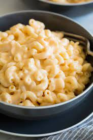

Maccaroni

How to Make the Best Damn Maccaroni and Cheese of Your Life
If you're anything like me, then maccaroni and cheese is one of those delicious comfort foods that takes you right back to your childhood home.
It brings to mind images of your mom stirring a big pot on the stove, a great, gooey, orange mass of carbs and fake cheese bubbling within. While the
boxed childhood standby is all well and good, why not make it even better? While not as fast as the instant stuff, this recipe will show you that homemade
'n cheese can be just as easy as the quick stuff, and so much better.
Ingredients
- 4 cups dried maccaroni
- 1 whole egg
- 4 tbsp butter
- 1/4 cup all-purpose flour
- 2 1/2 cups whole milk
- 2 tsps dry mustard
- 1 pound sharp Cheddar, grated
- salt, to taste
- 1/2 tsp black pepper
Steps
- Preheat oven to 350 degrees
- Cook the maccaroni until still slightly firm.
Drain and set aside.
- In a small bowl, beat the egg. In a large pot, melt the butter and sprinkle in the flour. Whisk together over medium-low heat. Cook for a couple of
minutes, whisking constantly. Don't let it burn. Pour in the milk, add the mustard and whisk until smooth. Cook until very thick, about 5 minutes.
Reduce the heat to low.
- Take 1/4 cup of the sauce and slowly pour it into the beaten egg, whisking constantly to avoid cooking the eggs. Whisk together until smooth. Pour
the egg into the sauce, whisking constantly. Stir until smooth. Add in the cheese and stir to melt. Add 1/2 teaspoon salt, 1/2 teaspoon seasoned salt
and the pepper. Add any additional spices if desired. Taste the sauce and add more salt and seasoned salt as needed! DO NOT UNDERSALT.
- Pour in the drained, cooked macaroni and stir to combine. Serve immediately (while it's still very creamy) or pour into a buttered baking dish,
top with extra cheese and bake until bubbly and golden on top, 20 to 25 minutes.